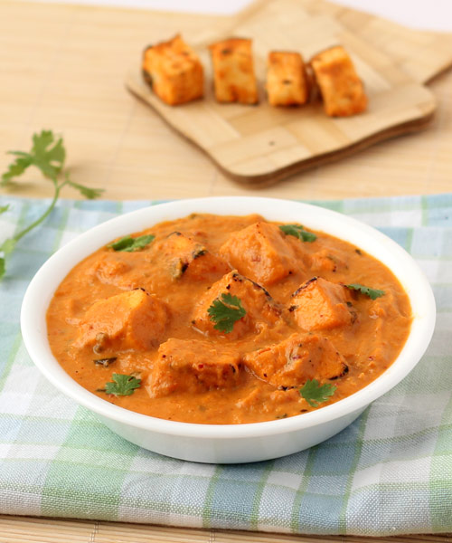

Paneer Tikka Masala

Description
Paneer tikka masala is a North Indian dish. Paneer is ubiquitous in Indian cooking and is a great vegetarian alternative to chicken, lamb and other meats. It is a firm, non-melting cheese that is similar in consistency to tofu. Tikka refers to a piece of food that has been grilled. In this case, the paneer is grilled before adding to the gravy. Finally, we have masala. While masala means any number of spices that are mixed, in this case the masala is referring to the spice laden gravy.
Ingredients
- 1 Cup Bite-Size Paneer
- 1 Cup Plain Yogurt
- 1/2 Inch Fresh Ginger
- 3-4 Small Garlic Cloves
- 1 Medium Onion - roughly chopped
- 2 Small Tomatoes - roughly chopped
- 8-9 Raw Cashews
- 1 Tbsp Tomato Ketchup
- 2 Tbsp Cream
- 1/2 Tbsp Sugar
- 4 Tbsp Olive Oil
- 1 Bay Leaf
- 3 Green Cardamoms - crushed into a fine powder
- 2 Cloves - crushed into a fine powder
- 1/2 Tsp Turmeric powder
- 1/2 Tsp Chili Powder
- 1 Tbsp Kasuri Methi
- 1/2 Tsp Garam Masala
- 2 Tbsp Whisked Plain Yogurt
- 1 Tsp Crushed Dry Fenugreek Leaves
- 1/2 Tsp Grated Ginger
Steps
- Add onion, tomato, ginger+garlic, cashews to make a smooth curry paste.
- Heat 1 tbsp olive oil in a non-stick pan.
- Add cubed paneer in the pan and saute for a minute or till lightly golden.
- Remove from pan and keep aside
- In the same pan, heat 3 tbsp of oil for a minute
- Add bay leaf, curry paste and saute for another minute (medium flame).
- Now add the turmeric, salt, chili powder, cardamom powder, clove powder and saute.
- Lower the flame, cover the pan and let this cook for 3-4 minutes (saute every minute- this ensures that the onions, along with other ingredients are properly cooked).
- Once the curry paste is cooked, add yogurt, tomato ketchup and saute.
- Let this simmer for 2 minutes over lower heat. (You'd see the gravy thickening up and imparting a pretty orange color).
- Now, add cream, kasuri methi, garam masala, 1/4 cup water and saute.
- Finally, add paneer and mix everything.
- Let this simmer on medium heat for 2-3 minutes and then turn off the heat.
- Transfer to a serving bowl and decorate with whisked yogurt, kasuri methi, and ginger.
- Serve hot with choice of side.